As persegui��es infernais come�aram no tempo
em que ele meditava e idealizava a �Casa da
Provid�ncia�, e logo a 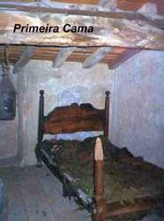
O dem�nio atacou-o de outro modo, procurando roubar-lhe a paz exterior. Cada noite o nosso Santo ouvia rasgarem as cortinas da sua cama. Inicialmente pensou que fossem roedores, mas pela manh� observava que as cortinas estavam intactas, sem qualquer dano.
Em outra �poca, no sil�ncio da noite ouviram-se pancadas e gritos no p�tio da Casa Paroquial. Acaso seriam ladr�es que queriam assaltar o Padre? O Cura desceu �s pressas e n�o viu nada. Mas o barulho foi t�o intenso que ele ficou assustado, nas noites seguintes receou ficar s�. Levou Andr� Verchere, carvoeiro da vila, jovem de 28 anos, robusto e corajoso, para dormir na Casa Paroquial. Por via das d�vidas Andr� levou o seu fuzil e uma caixa de balas. Ele descreve o acontecido: �Altas horas da noite ouvi sacudir violentamente o ferrolho e a tranca da porta de entrada. Simultaneamente contra a mesma porta ressoavam fortes pancadas, enquanto a casa se enchia de um ru�do atordoador como de v�rios carros. De um salto da cama peguei o fuzil e abri a janela com viol�ncia. Olhei para o p�tio e a entrada e n�o vi nada. Ent�o a casa estremeceu durante 25 minutos aproximadamente. Fiquei apavorado. Confesso que minhas pernas tremeram sem parar e disto me ressenti durante oito dias. Quando o estr�pito come�ou, o senhor Cura acendeu uma l�mpada e veio ter comigo, a casa estremecia como se a terra embaixo se movimentasse. Ele me perguntou:��Tens medo�? �Respondi que n�o, mas que minhas pernas estavam tremendo muito. Perguntei: O que o senhor pensa que seja isto? Ele me respondeu:��Provavelmente � obra do diabo�.
�Quando cessou o barulho voltamos a dormir. Na noite seguinte o senhor Cura pediu-me que ficasse novamente com ele, mas n�o aceitei, respondi-lhe que j� tinha levado um susto suficientemente grande�.
De onde procediam aqueles ru�dos misteriosos? O Padre Vianney intranquilo, por�m prudente, ainda n�o ousava emitir uma concreta opini�o. Uma noite em que a neve cobria o solo ressoaram gritos no p�tio. Disse o Padre: �Era como um ex�rcito de Austr�acos ou de Cossacos que confusamente falavam uma l�ngua que eu n�o entendia. Abri a porta, n�o vi ningu�m�! Ent�o n�o havia mais lugar para d�vidas. N�o se tratava de vozes humanas, mas de qualquer coisa horr�vel e infernal. Ficou convencido de que nem paus e nem fuzis poderiam contra o inimigo, que somente ele e DEUS o poderia enfrentar.
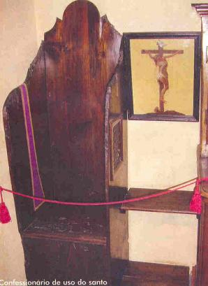
Em outras ocasi�es, Padre Vianney sentia como se lhe passassem a m�o pelo rosto, ou como se ratos subissem em seu corpo na cama. Certa noite ouviu o ru�do de um enxame de abelhas. Ele levantou-se e acendeu a vela, e n�o viu nada. Outra vez o dem�nio experimentou arranc�-lo do leito atirando ao ch�o o colch�o r�stico em que ele se encontrava deitado. O Padre Vianney mais assustado do que das outras vezes, de imediato fez o sinal da Cruz e o dem�nio desapareceu.
Certo dia do ano 1820, ele tinha levado de sua Igreja para a Casa Paroquial, um velho painel que representava a Anuncia��o. O quadro foi pendurado junto � escada de acesso ao andar superior. Satan�s se encolerizou contra aquela simples imagem e a cobriu de imundices. O Padre foi obrigado a retirar o quadro daquele local, porque a figura da VIRGEM MARIA ficou irreconhec�vel.
Em fins de Fevereiro de 1857, Padre Vianney estava atendendo no confession�rio e aconteceu um fato impressionante. O Sant�ssimo estava exposto e ele atendia as confiss�es desde cedo. No momento em que deixava o confession�rio para celebrar a Santa Missa, vieram correndo avis�-lo, que havia fogo no quarto dele na Casa Paroquial. Ele lhes entregando a chave da casa para que apagassem o fogo, disse sem muita preocupa��o: �Esse vil�o do dem�nio, n�o podendo pegar o p�ssaro, queima a sua gaiola�.
Ao meio dia quando passou pela �Casa da Provid�ncia� encontrou o Padre Alfredo Monnin e conversando sobre o assunto ele lhe perguntou: �O senhor acredita na verdade que o maligno tenha feito qualquer coisa�? Respondeu o Padre Vianney: �Sim. Ele est� furioso e isso � bom sinal. � sinal de que vir�o muitos pecadores em busca da miseric�rdia de DEUS, para limpar os seus pecados�. E, com efeito, durante aqueles dias houve em Ars um movimento extraordin�rio.
Em muitas ocasi�es o diabo atacou tamb�m as obras da �Casa da Provid�ncia�. As professoras e as �rf�s foram despertadas algumas noites por rumores muito estranhos. Descreve Maria Filliat: �Depois de ter lavado bem a panela, coloquei �gua para fazer a sopa. Vi que na �gua havia alguns pedacinhos de carne. Era dia de abstin�ncia. Esvaziei bem a panela. Lavei-a novamente e coloquei �gua. Quando a sopa estava pronta para ser servida, apareceram outra vez pedacinhos de carne boiando. Contei ao Padre Vianney e ele me respondeu: �� o dem�nio que faz tudo isso. Sirva a sopa assim mesmo�.
Depois de
tantos outros acontecimentos, as autoridades eclesi�sticas constataram que o
Padre Vianney tinha realmente a for�a Divina para enfrentar satan�s e por isso,
para oficializar, Monsenhor Devie, o Bispo Diocesano, lhe autorizou a exercitar
o seu poder de exorcista com todos que necessitassem. A este respeito existem
muitas testemunhas. Jo�o Picard, ferreiro do povoado, presenciou v�rias cenas
estranhas. �Uma infeliz mulher fora
trazida de longe pelo marido. Estava furiosa: se movimentava bruscamente
e soltava gritos desarticulados. Levaram-na ao senhor Cura, que depois de
examin�-la, disse ser necess�rio conduzi-la ao senhor Bispo da Diocese�
. Respondeu a mulher com voz 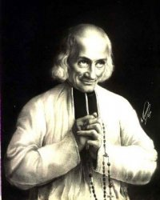
Dia 27 de Dezembro de 1857, um coadjutor de S�o Pedro de Avinh�o e a Superiora das Franciscanas de Orange acompanharam uma jovem professora que dava sinais de possess�o diab�lica. O Arcebispo de Avinh�o j� tinha estudado o caso e aconselhou que a conduzissem ao Padre Vianney. Quando chegaram, ele estava na sacristia se paramentando para a Santa Missa. De repente a possessa procurou a porta da sacristia para escapar, gritando: �H� muita gente aqui�. Perguntou o Padre: �H� muita gente? Pois bem, agora sair�o�. A um sinal todas as pessoas presentes se ocultaram e ele ficou s� com a pobre v�tima de Satan�s. A principio, n�o se ouvia mais do que um murm�rio de palavras. Depois o tom foi-se elevando. O coadjutor de Avinh�o que ficara junto � porta da sacristia, ouviu uma parte do di�logo. Perguntou o Cura: �Quer sair de uma vez�? Respondeu a coisa: �Sim�. Insistiu o Padre: �Porque�? Disse a coisa: �Porque estou com um homem que detesto�. E o Padre prosseguiu: �N�o gosta de mim�? Um �N�o� estridente foi toda a resposta do esp�rito que habitava aquela mulher. Quase no mesmo momento, abriu-se a porta da sacristia com viol�ncia, indicando que algu�m tinha sa�do. O poder do Santo triunfara. A mo�a, recolhida e modesta, chorando de alegria, agradeceu ao senhor Cura e se ajoelhou na Igreja diante de DEUS. Num breve instante voltou-se para o Padre e disse: �Temo que ele volte� . O Padre Vianney lhe deu confian�a: �N�o, n�o, minha filha, nunca mais�.
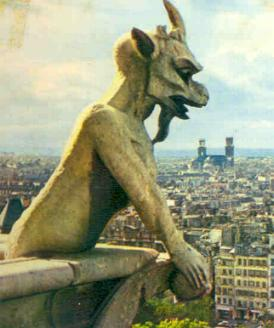
O Cura d�Ars, cujo olhar penetrava o mundo do mist�rio, mostrou grande severidade com aqueles que praticavam o espiritismo e o ocultismo. Por outro lado, � medida que envelhecia em idade, as obsess�es e os ataques diab�licos foram diminuindo em n�mero e intensidade. O esp�rito do mal que n�o conseguiu desalentar aquela alma her�ica acabou por desanimar e desistir.
PEREGRINA��O A ARS, CULTO A SANTA FILOMENA
� um fato raro na hist�ria, um homem em vida ser visitado em peregrina��o por multid�es de pessoas, que acorrem a sua cidade para vener�-lo como a uma rel�quia. Durante 32 anos, de 1827 a 1859, a aldeia de Ars foi testemunha desta verdade: multid�es sem cessar se renovavam e ca�am de joelhos aos p�s de um Santo, seja para se confessar, para ouvir um conselho ou participar de uma Santa Missa. J� naquela �poca, a fama de santidade do Padre Jo�o Maria Batista Vianney ultrapassou os limites regionais, espalhou por toda a Fran�a, alcan�ando at� outros pa�ses.
Em 1834, a Condessa Laura de Garets,
escrevia a seu pai: �A pequena Igreja
de Ars est� cheia de fieis, entre os 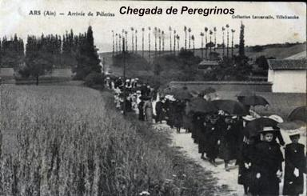
Sem d�vida se come�ou a atribuir poder milagroso ao Padre Vianney, quando aconteceu a multiplica��o do trigo e da farinha no ano 1830. O fato foi amplamente conhecido pelos moradores e depois pelos peregrinos, que chegavam em grande n�mero. Isto, logo fez aparecer entre a multid�o, pessoas com problemas de sa�de, d�beis e enfermas. Muitos deles, depois de suplicarem a ora��o e intercess�o do Cura, obtiveram de DEUS algum al�vio para as suas dores e at� mesmo a cura total.
Mas o Padre Vianney humildemente recomendava sil�ncio e o povo n�o queria contrari�-lo, publicando as gra�as alcan�adas. Mas mesmo assim, as not�cias espalhavam rapidamente. Quando ele introduziu na Par�quia o culto a Santa Filomena, que era uma das suas preferidas, o servo de DEUS come�ou a atribuir � Santa toda a gloria das maravilhas que ali se realizavam e gostava ainda de proclamar: �DEUS fazia os milagres por intercess�o de Santa Filomena�.
CONFESSOR INCANS�VEL, GRAVE ENFERMIDADE
Durante 30 anos uma multid�o de fieis e peregrinos se renovava sem cessar na
Igreja de Ars, para se confessar com o Padre Vianney. Mesmo no inverno, entre os
meses de Novembro a Mar�o que o frio � terr�vel na regi�o de Dombes, a
frequ�ncia n�o diminuiu e o Santo passava de 11 a 12 horas no confession�rio, e
no per�odo do ver�o, ficava de 15 a 17 horas. Sem d�vida, um esfor�o
praticamente sobrenatural para salvar almas, porque sabemos que humanamente �
desgastante e mortal. Em 1845 chegavam diariamente a Ars de 300 a 400
peregrinos. Na esta��o ferrovi�ria de Perrache, a mais importante de Lion,
existia uma bilheteria especial, em car�ter permanente, para vender bilhetes com
destino a Ars. E � importante acrescentar, a multid�o que acorria ao Padre
Vianney era formada por pessoas das mais variadas classes: Bispos, Sacerdotes e
religiosos: grande n�mero de jesu�tas e maristas, capuchinhos, recoletos e
dominicanos; chegavam tamb�m nobres e plebeus, ignorantes e s�bios, uns
habituados a discutir os mais graves problemas e outros movidos unicamente pela
f�. Em dias de festa, o Padre permanecia at� 18 horas no confession�rio a fim de
n�o deixar ningu�m sem a absolvi��o Divina. E por sua vez, os peregrinos
esperavam de 30 a cinquenta horas na fila, para serem atendidos. As pessoas que
desejavam sair para descansar ou fazer alguma refei��o, para n�o perder o lugar,
tinham que colocar algu�m na vaga. Quando anoitecia, era preciso sair, por que o
zelador fechava a Igreja e o Padre caminhava para a sua casa. Ent�o para n�o
perder o lugar, arranjavam pessoas para permanecerem na vaga at� o dia seguinte,
ou o interessado se instalava, ele mesmo, na entrada da Igreja e ali passava a
noite, para manter a sua posi��o na fila. Pela manh� logo cedo o senhor Cura se
levantava e vinha atender as confiss�es na Igreja, que s� eram interrompidas
para celebrar a Santa 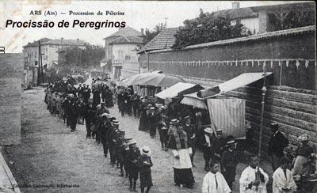
Diz-se que o grande milagre do Cura d�Ars foi o seu confession�rio, que era assediado dia e noite. Com igual exatid�o se poderia afirmar que o seu milagre por excel�ncia foi � convers�o dos pecadores. O Padre Toccanier falava: �O Cura d�Ars tinha um dom particular para converter os pecadores. Se poderia dizer que os amava com todo o �dio que tinha contra o pecado�. Centenas e centenas de ocorr�ncias not�veis foram registradas pela interven��o do Padre Jo�o Maria. Aqui, para n�o ultrapassar uma dimens�o razo�vel no Site, anotaremos apenas um acontecimento.
Uma senhora que viajava pela redondeza, de regresso a capital (Paris), foi aconselhada a passar por Ars, por um sacerdote que queria ajud�-la a se converter, pois conhecia a desordem de sua vida, entregue a sexualidade e aos maus costumes. Disse ele: �A senhora ver� ali algo de extraordin�rio, um sacerdote de aldeia que est� enchendo o mundo com sua fama de santidade. N�o se arrepender� dessa visita�. Na d�vida de seguir ou n�o o caminho do direito, viajou para Ars. � tarde passeava na pra�a com uma desconhecida, encontrada casualmente, quando deparou com o Cura d�Ars que regressava da visita a um enfermo. �Senhora� , disse ele � parisiense, �acompanhe-me�. �E a outra�? Perguntou � senhora. Ele disse: �Pode retirar-se, porque ela n�o tem necessidade de meu minist�rio�. Caminhando ao lado da pecadora, foi tirando o v�u de todas as suas iniquidades. Aterrada e impressionada com as revela��es, caminhava silenciosa. E assim foi, at� que num �mpeto de coragem, disse: �Senhor Cura, quer ouvir-me em confiss�o�? Respondeu o Cura: �Sua confiss�o seria in�til. Eu leio na sua alma e vejo dois dem�nios que a acorrentam: o dem�nio do orgulho e o dem�nio da impureza. N�o a posso absolver. S� no caso em que decida n�o voltar � Paris, mas como vejo as suas disposi��es, sei que voltar� . Depois, com intui��o prof�tica, o homem de DEUS lhe fez conhecer como ela seguindo aquele caminho haveria de descer at� os �ltimos degraus do mal. Assustada diante daquelas palavras incisivas, disse: �Mas, senhor Cura, eu sou incapaz de cometer tais abomina��es! Ent�o, estou condenada�? Respondeu o Padre Vianney: �N�o digo isso. Por�m, se continuar no mesmo caminho, qu�o dif�cil ser� a sua salva��o�! Perguntou ela: �Que hei de fazer�? J� na Igreja o Santo respondeu: �Venha amanh� cedinho e eu lhe direi�.
Durante a noite, para ajudar aquela alma que DEUS tinha criado para ELE e ela estava se perdendo, afundando no lama�al do pecado, o Cura orou longamente e infligiu sangrenta disciplina em seu pr�prio corpo. Pela manh�, no confession�rio, lhe deu a resposta: �Pois bem, deixar� Paris e se verdadeiramente quer salvar a sua pobre alma far� [tais e tais...(e enumerou)] as mortifica��es�.
A senhora partiu de Ars sem ter recebido a absolvi��o. Em Paris organizou os seus afazeres e se retirou para uma casa de campo. Um grande t�dio se apoderou da alma dela em rela��o ao pecado e t�o grande era o seu horror, que apesar da forte concupisc�ncia e a diab�lica tenta��o, resolveu lutar e reencetar o caminho do bem. Lembrava-se dos conselhos do Cura d�Ars e uma gra�a muito poderosa a impeliu e lhe ajudou a segui-los com devo��o. Disse o Cura: �No caminho da abnega��o, quando se quer lutar e perseverar, s� � custoso o primeiro passo. Quando se entra nele, caminha-se por si mesmo...� Ela decidiu enfrentar a batalha e caminhou segura. No prazo de tr�s meses, sua convers�o foi completa. Ela tanto dominava a pr�pria vontade, como entregava todos os seus esfor�os a DEUS, testemunhos de seu amor penitente, dedicado e completamente arrependido pelo mal que praticou. Por certo, ela deve ter voltado a Ars para receber a absolvi��o sacramental do Cura e primordialmente, para se extasiar e desfrutar da santidade paterna que emanava dele, que como modelo, convidava todos os peregrinos ao mesmo caminho para o SENHOR.
Al�m da grande quantidade de pessoas que procuravam o Cura d�Ars para se confessarem, havia muitas outras que o procuravam para um conselho espiritual ou serem guiadas na escolha da devo��o, e profiss�o existencial. Ele tinha um dom especial�ssimo que lhe permitia discernir a inclina��o da alma, assim como tinha a intui��o de presumir o futuro, dissipando as trevas da incerteza e lan�ando uma poderosa luz no cora��o daqueles que lhe procuravam, orientando-os seguramente.
Ele tamb�m procurava levar as almas piedosas � pr�tica frequente dos sacramentos. Ele dizia: �Nem todos os que se aproximam dos Sacramentos s�o santos, mas os Santos sair�o sempre dentre aqueles que recebem os sacramentos com frequ�ncia�. Naquela �poca, n�o existia na Fran�a a comunh�o frequente, foi ele um dos primeiros introdutores de t�o saud�vel pr�tica. Era comum comungar s� aos domingos, ou uma vez ao m�s. O Catecismo do Cura sobre a comunh�o frequente era cheio de ardoroso apelo e exclama��es sublimes. Dizia o Padre: �Meus filhos, todos os seres da cria��o tem necessidade de se nutrirem para viver. DEUS fez a humanidade, os animais, as aves e fez crescer as �rvores e as plantas. � uma mesa bem sortida, aonde todos os animais vem cada um tomar o alimento que lhe conv�m. Mas � necess�rio que a alma tamb�m se nutra. Onde est�, pois o seu alimento? Meus filhos, quando DEUS quis dar alimento � nossa alma para sustent�-la em sua peregrina��o neste mundo, ELE olhou para todas as coisas criadas e n�o encontrou nada digno dela. Ent�o SE concentrou em SI mesmo e resolveu SE dar a SI pr�prio para alimento da alma da humanidade. �! Minha alma, como �s grande! S� DEUS pode te contentar! Ent�o, o alimento da alma � o Corpo e o Sangue de DEUS! �! Formoso alimento! A alma s� pode se alimentar de DEUS! S� DEUS pode saci�-la�!
O Cura esteve durante 41 anos a frente de
sua Par�quia em Ars e nunca tirou f�rias e nem separou um tempo para 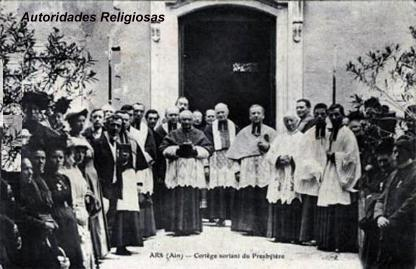
Mas isto n�o aconteceu! Padre Jo�o Maria suplicava ao Bispo, Monsenhor Devie, mas nunca conseguiu um tempo para repouso e renova��o de suas energias. No m�s de Maio de 1853 uma febre violenta apoderou-se dele. O m�dico Dr. Saunier diagnosticou pneumonia. Era necess�rio come�ar o tratamento imediatamente, enquanto Padre Lacote, o P�roco de uma cidade vizinha Saint-Jean-le-Vieux, seu amigo, se incumbiu de ajudar em Ars. Conseguiu uma licen�a do senhor Bispo para continuar o tratamento e ent�o, viajou para Dardilly e ficou com seu irm�o Fr�ncico para se recuperar do problema.
Mas, depois de algum tempo em Dardilly, o povo descobriu o novo endere�o e foram � procura do Santo. A frequ�ncia aumentou tanto, que ele j� bem melhor, celebrou Missas em Ecully e logo depois, marcou o regresso a Ars. Dia 19 de Setembro de 1853 finalmente voltou a sua Par�quia. Aos repiques festivos dos sinos da Igreja, apoiado no seu bord�o, subiu at� a pra�a onde o povo estava reunido esperando. Com voz tremula e cheio de emo��o disse: �Eu n�o vos deixarei mais�! N�o pode articular outras palavras, sentia a garganta apertada, e os olhos, cheios de l�grimas levantava ao C�u em sinal de agradecimento; e assim, caminhando apoiado no Padre Raymond, fez varias voltas na pra�a, aben�oando a todos, manifestando a sua imensa felicidade.
Como o seu retorno foi pouco divulgado, pode desfrutar de mais alguns dias de repouso, pois os peregrinos se haviam dispersado durante a sua aus�ncia. Reassumiu os minist�rios ordin�rios e continuou o seu trabalho. Quando a noticia espalhou, o povo tornou a afluir de todas as partes, entrando naquele ritmo pesado de seu precioso apostolado. �Que teria sido de tantos pobres pecadores�? Perguntava ele mesmo. E conclu�a o Conde Garets: �Desde ent�o o senhor Cura compreendeu melhor que DEUS o queria aqui, entre n�s�.
SUPRESS�O DO ORFANATO, FUNDA��O DA ESCOLA, AS MISS�ES DECENAIS
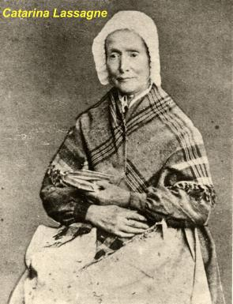
Este movimento caminhou de tal ordem, que o Padre Vianney acabou por concordar, e depois de uma longa conversa com as professoras, suas eficientes colaboradoras, que muito se entristeceram e derramaram muitas l�grimas, decidiram entregar a �Casa da Provid�ncia� as irm�s de S�o Jos�. O C�nego Perrodin fundara em Bourg, com o aux�lio das irm�s de S�o Jos�, uma esp�cie de Casa da Provid�ncia, que estava apresentando excelentes resultados. Ent�o a primeira indica��o acenava como uma boa perspectiva.
As negocia��es entre o Santo e a casa Matriz em Bourg continuaram por seis meses. Finalmente em 5 de Novembro de 1847 foi assinado o documento entre o Padre Vianney e a senhora Lu�sa Monnet (Irm� S. Claud, Superiora Geral da Congrega��o), onde estavam todas as decis�es da transfer�ncia.
As irm�s de S�o Jos� assumiriam a �Casa da Provid�ncia�, despediram as �rf�s e reduziram o pessoal escolhido pelo Padre Vianney. Joana Maria Chanay retirou-se para a casa de sua irm�, que morava na aldeia; Catarina Lassagne e Maria Filliat foram habitar duas pequenas vivendas cont�guas � Casa Paroquial, com a miss�o de cuidarem dos ornamentos sagrados, da limpeza dos altares e de preparar a comida do P�roco. Al�m disso, se dedicaram a tecer linho, fazendo toalhas, colchas e pe�as para enfeites, e tamb�m visitar os enfermos. Come�ava assim uma nova �poca para a �Casa da Provid�ncia�, sem o Orfanato.
O relacionamento entre as Irm�s de S�o Jos� e o Padre Vianney, assim como com as antigas dirigentes e professoras, continuou normal e bom, inclusive as visitas eram constantes. Em 1857, uma de suas sobrinhas entrou como postulante na Congrega��o de S�o Jos�, gra�as a sugest�o pessoal do Cura.


Durante sua longa vida de P�roco, Padre Vianney se interessou tamb�m pela educa��o dos meninos. Na verdade, ele pretendia que esta instru��o fosse ministrada por religiosos e de modo gratuito. Todavia, n�o tinha encontrado o caminho ideal para concretizar este objetivo. Por isso, insistiu junto ao Maire (Chefe da Administra��o Municipal) senhor Miguel Seve, para que escolhesse um professor jovem de Ars, Jo�o Pertinand, sobrinho do Padre Renard. Em 1838, com 20 anos de idade, j� com a nomea��o municipal, desempenhou o cargo de mestre-escola por 11 anos em sua terra natal. Mas a 10 de Mar�o de 1849, o Padre Vianney viu a possibilidade de concretizar o seu sonho, quanto � educa��o dos meninos. Conseguiu tr�s irm�os da Sagrada Fam�lia da cidade de Belley. Ele assumiu a manuten��o dos tr�s professores que substitu�ram a Jo�o Pertinand. A Escola cresceu e se desenvolveu de maneira not�vel. O Cura d�Ars estava convencido de que uma boa educa��o merece todos os sacrif�cios.


Al�m da Escola para os meninos, no mesmo ano de 1849 o Cura d�Ars se interessou por outra obra, de car�ter mais geral, mas que ia produzir muitos e muitos frutos. Sabia muito bem como os exerc�cios de uma miss�o eram t�o �teis, principalmente para as Par�quias mais pobres. Como o Cura d�Ars entregou a dire��o da �Casa da Provid�ncia� as Irm�s de S�o Jos�, n�o tinha que se ocupar mais com o provimento daquela Casa. O Bispo, Monsenhor Devie pediu-lhe que pensasse em ajudar os mission�rios. O Santo respondeu: �Consultarei o bom DEUS�. Alguns dias depois, com muita alegria, enviou pelo Padre Raymond a Diocese, seis mil francos, cujos juros deveriam ser empregados para custear cada 10 anos, uma miss�o em 10 Par�quias diferentes. Acaso n�o se tratava da salva��o dos pecadores? Quando morreu, ele deixou fundado mais 100 miss�es decenais (de 10 em 10 anos). Desse modo, mesmo n�o estando no mundo, continuou levando as almas convertidas para DEUS. Como ele era pobre, o dinheiro vinha dos peregrinos e das ofertas de todos aqueles que foram beneficiados pela gra�a de DEUS, atrav�s da sua intercess�o.
C�NEGO DA CATEDRAL DE BELLEY, CAVALEIRO DA LEGI�O DE HONRA, FESTA DO DOGMA DA IMACULADA
Pode-se afirmar que em 1850, o Padre Jo�o Maria Batista Vianney era o sacerdote mais c�lebre de toda a Fran�a. Por isso mesmo, o Monsenhor Devie, Bispo Diocesano pensou em homenage�-lo, elevando-o a C�nego da Catedral. Mas como o costume se opunha a que um simples Cura do interior recebesse tal honra, deixou o assunto na expectativa. Na sequ�ncia dos meses, Monsenhor Devie foi substitu�do por Monsenhor Chaladon. Ele que j� estava como Bispo Auxiliar da Diocese por dois anos, conhecia muito bem o Cura d�Ars, por isso, uma de suas primeiras resolu��es foi dar continuidade ao pensamento de Monsenhor Devie, de dar a mur�a (pe�a de tecido usada em cima da sobrepeliz) de C�nego ao sacerdote mais digno da Diocese.
Tr�s meses
depois de sua eleva��o � sede de Belley, dia 25 de Outubro de 1852, o novo
Bispo, acompanhado do 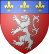
Monsenhor partiu, e uma vez passada a emo��o, o C�nego Vianney que n�o queria usar a mur�a de maneira nenhuma, e sendo muito desapegado das coisas materiais, logo pensou em fazer dinheiro com aquele bonito presente, para ajudar as suas obras. E logo na primeira oportunidade vendeu para a senhora Maria Ricotier que voltava de Villefranche. Ela que j� possu�a diversos objetos do Cura que guardava diligentemente como lembran�a, ficou com mais este, pagando 50 francos por ele. Ela n�o queria levar a mur�a, porque ele poderia precisar us�-la. Ele disse: �Se em alguma ocasi�o o senhor Bispo exigir que coloque a minha mur�a, bem, sempre a encontrarei em sua casa�. E com a consci�ncia tranquila, 10 dias depois escreveu ao prelado: �Monsenhor, a mur�a que teve a caridade de me dar causou-me um grande prazer, pois n�o tinha bastante dinheiro para completar uma funda��o e a vendi por 50 francos. Com esse dinheiro fiquei muito alegre e feliz�.


Diariamente acontecia a chegada de centenas de peregrinos, que vinham atra�dos pela santidade do Cura d�Ars. Em consequ�ncia daquele not�vel movimento, ocorreu uma substancial melhoria ao com�rcio, com amplia��es de todos os neg�cios, instala��es de novos hot�is objetivando oferecer suporte aos visitantes, fazendo com que a cidade se tornasse conhecida em toda a Fran�a e parte do mundo. E isto tamb�m, veio ajudar efetivamente a Prefeitura Municipal, fazendo crescer o valor arrecado do imposto sobre servi�os e mercadorias.
O Governo Civil de Ars que sempre considerou o Padre Vianney um homem popular e benfazejo, inclusive pelas obras que realizou na cidade e pelos fatos mencionados, decidiu conferir-lhe uma honraria, sendo nomeado Cavaleiro da Ordem Imperial da Legi�o de Honra, recebendo inclusive a bonita ins�gnia dourada. Todavia, conhecendo o esp�rito arredio do Cura, inimigo de todas as homenagens e honrarias, a comenda chegou em Novembro de 1855 �s m�os de Monsenhor Chaladon, Bispo Diocesano. Para fazer a entrega da comenda ao Padre Vianney, ele delegou poderes ao Padre Toccanier que substituiu o Padre Raymond como coadjutor do Cura d�Ars.
Padre Toccanier recebeu do Bispo de Belley o pequeno estojo selado com um grande sinete roxo, contendo a estrela de prata dourada. Ao meio dia, aproveitou um momento que o Padre Vianney estava no quarto, para lhe apresentar o cofrezinho. O Irm�o sacrist�o, os Irm�os professores, Catarina Lassagne e Joana Maria Chanay, que estavam presentes e preparados para homenage�-lo, se ocultaram por tr�s da escada. Quando o Padre Toccanier come�ou a falar, todos eles se apresentaram. �Senhor Cura, talvez sejam rel�quias que lhe enviam�. O Servo de DEUS desejoso de ver as rel�quias rompeu o selo e abriu a caixa. Ao ver a preciosa j�ia, falou: �� isso mesmo, uma preciosa rel�quia�. Disse o Padre Toccanier: �Note bem, senhor Cura, que esta condecora��o est� encimada por uma cruz. Queira benz�-la�. E quando, com um largo gesto a benzeu, disse o Padre Toccanier: �Agora me permita a colocar por uns momentos no seu peito�. Disse o Cura: ��! Meu amigo, DEUS me livre disso�. E colocando a cruz da Legi�o de Honra na m�o do subdelegado episcopal, lhe disse: �Tome amigo. Seja t�o grande o seu prazer em receb�-la quanto � o meu em lhe oferec�-la�. Assim foi condecorado o Cura d�Ars. N�o tendo permitido que lhe pregassem o distintivo na batina, s� uma �nica vez ostentou a cruz de cavaleiro: no dia de seu enterro, sobre o seu ata�de!


Era uma caracter�stica do Padre Vianney: tinha
um total desprezo pelas honrarias e n�o tinha nenhum interesse nas 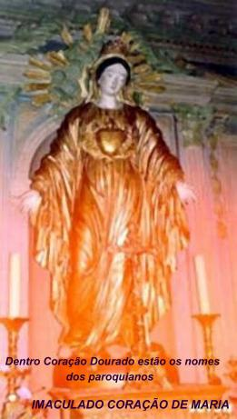
A festa atingiu o auge no dia inolvid�vel de 8 de Dezembro de 1854, quando o Papa Pio IX definiu o dogma da IMACULADA CONCEI��O DE MARIA: �em virtude da autoridade dos Santos Ap�stolos Pedro e Paulo e da sua pr�pria, afirmo que a Bem-aventurada VIRGEM MARIA foi preservada de toda mancha do pecado original desde o primeiro instante de sua concei��o�.
� tarde, toda a Par�quia foi em prociss�o � Escola dos Irm�os (s� para meninos), onde o senhor Cura benzeu uma est�tua da VIRGEM IMACULADA, oferta sua, edificada no jardim. � noite, a aldeia foi praticamente toda iluminada! Estava linda! O senhor Cura passeava satisfeito e muito alegre por entre os sacerdotes presentes e os Irm�os. Aquela festa foi, sem d�vida, um dos dias mais felizes de sua vida. Quase septuagen�rio, parecia ter rejuvenescido. Jamais um filho se mostrou t�o feliz ao presenciar o triunfo de sua M�E.
�NSIA DE SOLID�O
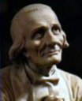
Entretanto, as duas tentativas fracassadas ajudaram a amadurecer o seu esp�rito e a lhe mostrar com letras luminosas qual era a Vontade de DEUS. Porque pelo desenrolar das ocorr�ncias ficou caracterizado com bastante �nfase, que o SENHOR quis que ele continuasse mesmo em Ars. E isso, foi exatamente o que aconteceu.


=IMAGENS DA �POCA=